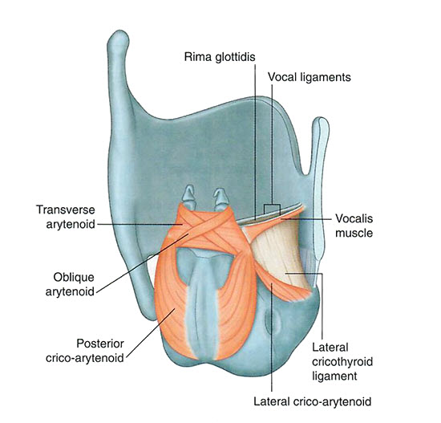

Pharynx and Larynx: Module 2 - Page 5 of 8
×

| We will remove the epiglotitis so we can see the addition of the intrinsic muscles controlling the larynx. |
|  |
| 🔍 Larynx muscles |
| Add the vocalis. | |
| Add the thyro-arytenoids. | |
| Add the oblique arytenoids. | |
| Add the lateral crico-arytenoids. | |
| Add the posterior crico-arytenoids. | |
| Add the cricothyroid. |
| Rotate the image to see an anterior view of the cricothyroid muscle. | |
| Add the transverse arytenoid. |